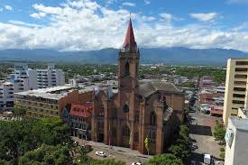

Neiva
Capital del Huila, tierra del Bambuco y el Río Magdalena

Neiva es un municipio colombiano, capital del departamento de Huila. situado entre la cordillera central y oriental, en una planicie sobre la margen oriental del rio magdalena, en el valle del mismo nombre, cruzada por los rios las ceibas y el oro.
Historia
Fundada el 24 de mayo de 1612, Neiva es una ciudad estratégica del sur de Colombia. Se destaca por su crecimiento económico, su riqueza cultural y su tradición folclórica.
Lugares Turísticos
Río Magdalena
El río más importante de Colombia atraviesa la ciudad y es símbolo de identidad.
Malecón del Río
Un espacio moderno para caminar, disfrutar en familia y apreciar el atardecer.
Desierto de la Tatacoa
Uno de los destinos más impresionantes del país, ideal para observar estrellas.
Cultura
Neiva es reconocida por el Festival del Bambuco y el Reinado Nacional del Bambuco, celebraciones que representan la identidad huilense.